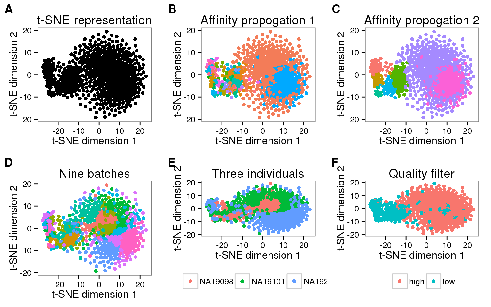
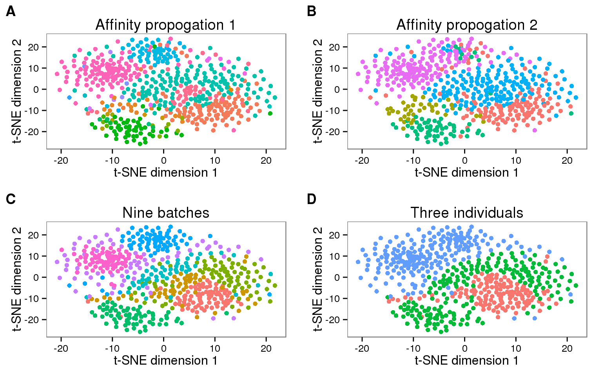

Last updated: 2016-04-24
Code version: 74f30e4e4b6c6fea3667336da91b01fb5603564f
library("ggplot2")
library("cowplot")
theme_set(theme_bw(base_size = 12))
theme_update(panel.grid.minor.x = element_blank(),
panel.grid.minor.y = element_blank(),
panel.grid.major.x = element_blank(),
panel.grid.major.y = element_blank())kallisto has also been used for fast clustering of single cell samples, described in a pre-print by Ntranos et al. They provide a GitHub repo with their code. Critically, because they modified kallisto, I cannot use the pre-built binary that I downloaded from the kallisto website (previous post). They provide the modified source code, but not pre-built binaries. Since our data is single end, I built the version modified for use with single end reads.
# Not executed here
git clone git@github.com:govinda-kamath/clustering_on_transcript_compatibility_counts.git
cd clustering_on_transcript_compatibility_counts/modified-kallisto-source/kallisto_pseudo_single
cmake -DCMAKE_CXX_COMPILER=/mnt/gluster/data/tools/gcc50/bin/g++ -DCMAKE_C_COMPILER=/mnt/gluster/data/tools/gcc50/bin/gcc -DCMAKE_INSTALL_PREFIX:PATH=/mnt/gluster/home/jdblischak/src ..
make
make installI indexed human transcriptome h
For each sample, I ran the command kallisto pseudoalign using the script run-kallisto.sh. The input was the 3 trimmed fastq files per sample. The output was one file with the transcript compatibility counts. The file extension is .class because it is later required by one of their processing scripts.
Combined the 864 TCC files into one large matrix is non-trivial. This is because each sample can have unique TCCs. Luckily they have provided all their processing scripts. I followed the steps below in accordance with the file Zeisel_wrapper.py.
They did not specify, but based on how print is used, they are using Python3.
To create the TCC matrix, I ran get_tcc_dist.py. It is invoked on line 95 of Zeisel_wrapper.py. As input, it requires the number of equivalence classes, which can be obtained with kallisto metadata.
# Not executed here
kallisto metadata kallisto/combined.idx[index] k-mer length: 31
[index] number of targets: 173,351
[index] number of k-mers: 104,422,494
[index] number of equivalence classes: 695,304
[metadata] output transcript names in kallisto/combined.idx_tr_id_names.txt
[metadata] output equiv.class map in kallisto/combined.idx_ecmap.txt Downloading the script.
# Not executed here
wget --no-check-certificate https://raw.githubusercontent.com/govinda-kamath/clustering_on_transcript_compatibility_counts/fb3328daffcec215549d7efef081468cd8005dd7/Zeisel_pipeline/get_tcc_dist.pyRunning it with no arguments outputs the usage information:
# Not executed here
python get_tcc_dist.pyusage is :
python get_tcc_dist.py -i input_tcc_dir -m number-of-eq-classes -t path-to-output-TCC-file -d path-to-output-TCC-dist-fileAnd running it from the data directory. Some notes:
pickle. Therefore I use the .dat file extension to follow their example..class.dist is short for distribution.# Not executed in this file
python get_tcc_dist.py -i kallisto/ -m 695304 -t kallisto/tcc.dat -d kallisto/tcc-dist.datThe next step is to obtain pairwise distance matrices with get_pairwise_distances.py, which is invoked on line.
Downloading the script.
# Not executed here
wget --no-check-certificate https://raw.githubusercontent.com/govinda-kamath/clustering_on_transcript_compatibility_counts/fb3328daffcec215549d7efef081468cd8005dd7/Zeisel_pipeline/get_pairwise_distances.pyChecking its usage.
# Not executed here
python get_pairwise_distances.py1
usage is
python get_pairwise_distances.py ip-file op-file num-processesThe input file is the output from the previous step from the -d flag, in my case tcc-dist.dat. The output file contains the distance measurements, so to use a similar name to what they use, I’ll call it tcc-distance.dat. This took a long time, so I submitted it to the cluster. I tried to use multiple cores with -pe simple_pe 8, but the job just sat in the queue. So I switched to just using 1 process.
# Not executed here
echo "python get_pairwise_distances.py kallisto/tcc-dist.dat kallisto/tcc-distance.dat 1" | qsub -l h_vmem=32g -N get_pairwise_distances -cwd-j y -V -o pairwise-log.txtThis matrix of pairwise distances is the input for the clustering steps. To interact with it from this file, I copy it to the main directory.
# Not executed here
cp kallisto/tcc-distance.dat $ssc/dataThe code for clustering the cells is in the file Zeisel_Analysis.ipynb. Below is their code, with minimal edits from me. It performs the following steps:
The changes I made were:
preference, to 864, corresponding to the number of samples I haveimport pickle
import scipy.sparse
import numpy as np
import itertools
filepath='../data/'
with open(filepath+'tcc-distance.dat','rb') as infile:
D = pickle.load(infile)
# Sanity check
assert np.all(np.isclose(D,D.T))
assert np.all(np.isclose(np.diag(D),np.zeros(np.diag(D).shape)))
from sklearn import manifold
def tSNE_pairwise(D):
tsne = manifold.TSNE(n_components=2, random_state=0, metric='precomputed', n_iter=2000, verbose=1);
X_tsne = tsne.fit_transform(D);
return X_tsne
X_tsne = tSNE_pairwise(D)
# [t-SNE] Computed conditional probabilities for sample 864 / 864
# [t-SNE] Mean sigma: 0.074415
# [t-SNE] Error after 100 iterations with early exaggeration: 23.493585
# [t-SNE] Error after 172 iterations: 2.055106
# Save the reduced dimensions
np.savetxt(filepath + "tcc-tsne.txt", X_tsne, delimiter = "\t")
from sklearn import cluster
# obtain labels via affinity propagation
def AffinityProp(D,pref,damp):
aff= cluster.AffinityPropagation(affinity='precomputed',preference=pref,damping=damp, verbose=True)
labels=aff.fit_predict(D)
return labels
pref = -np.median(D.flatten())*np.ones(864)
tcc_affinity_labels1 = AffinityProp(-D,pref,0.5)
tcc_affinity_labels2 = AffinityProp(-D,2*pref,0.7)
# Save the labels
np.savetxt(filepath + "tcc-labels-01.txt", tcc_affinity_labels1,
delimiter = "\t", fmt = "%d")
np.savetxt(filepath + "tcc-labels-02.txt", tcc_affinity_labels2,
delimiter = "\t", fmt = "%d")[t-SNE] Computed conditional probabilities for sample 864 / 864
[t-SNE] Mean sigma: 0.074415
[t-SNE] Error after 100 iterations with early exaggeration: 23.493585
[t-SNE] Error after 172 iterations: 2.055106
Converged after 36 iterations.
Converged after 36 iterations.Importing the data into R.
tsne <- read.table("../data/tcc-tsne.txt")
stopifnot(dim(tsne) == c(864, 2))
colnames(tsne) <- c("dim1", "dim2")
labels_01 <- scan("../data/tcc-labels-01.txt", what = "character")
length(unique(labels_01))[1] 96labels_02 <- scan("../data/tcc-labels-02.txt", what = "character")
length(unique(labels_02))[1] 7Importing our annotation.
quality_cells <- scan("../data/quality-single-cells.txt", what = "character")
anno <- read.table("../data/annotation.txt", header = TRUE,
stringsAsFactors = FALSE)
head(anno) individual replicate well batch sample_id
1 NA19098 r1 A01 NA19098.r1 NA19098.r1.A01
2 NA19098 r1 A02 NA19098.r1 NA19098.r1.A02
3 NA19098 r1 A03 NA19098.r1 NA19098.r1.A03
4 NA19098 r1 A04 NA19098.r1 NA19098.r1.A04
5 NA19098 r1 A05 NA19098.r1 NA19098.r1.A05
6 NA19098 r1 A06 NA19098.r1 NA19098.r1.A06Combine data.
d_all <- data.frame(tsne, labels_01, labels_02, anno, stringsAsFactors = FALSE)
d_all$quality <- ifelse(d_all$sample_id %in% quality_cells, "high", "low")plot_tsne <- ggplot(d_all, aes(x = dim1, y = dim2)) +
geom_point() +
labs(x = "t-SNE dimension 1", y = "t-SNE dimension 2",
title = "t-SNE representation") +
theme(legend.position = "none")
plot_labels_01 <- plot_tsne %+% aes(color = labels_01) +
labs(title = "Affinity propogation 1")
plot_labels_02 <- plot_tsne %+% aes(color = labels_02) +
labs(title = "Affinity propogation 2")
plot_batch <- plot_tsne %+% aes(color = batch) +
labs(title = "Nine batches")
plot_individual <- plot_tsne %+% aes(color = individual) +
labs(title = "Three individuals") +
theme(legend.position = "bottom",
legend.title = element_blank())
plot_quality <- plot_tsne %+% aes(color = quality) +
labs(title = "Quality filter") +
theme(legend.position = "bottom",
legend.title = element_blank())
plot_grid(plot_tsne, plot_labels_01, plot_labels_02,
plot_batch, plot_individual, plot_quality,
nrow = 2, labels = LETTERS[1:6])
The main split is between high and low quality cells. It would be more interesting to see the clustering and affinity propagation labels for only the cells we label as high quality.
Converting the pickle pairwise matrix to plain text for import into R.
import pickle
import numpy as np
filepath='../data/'
with open(filepath+'tcc-distance.dat','rb') as infile:
D = pickle.load(infile)
np.savetxt(filepath + "tcc-distance.txt", D, delimiter = "\t")Now read into R for filtering.
distance <- read.table("../data/tcc-distance.txt")
stopifnot(dim(distance) == 864)
quality_index <- anno$sample_id %in% quality_cells
distance_qual <- distance[quality_index, quality_index]
stopifnot(dim(distance_qual) == length(quality_cells))
write.table(distance_qual, file = "../data/tcc-distance-qual.txt", sep = "\t",
row.names = FALSE, col.names = FALSE, quote = FALSE)Now back to Python for t-SNE and affinity propagation.
import scipy.sparse
import numpy as np
import itertools
filepath='../data/'
D = np.loadtxt(filepath + 'tcc-distance-qual.txt', delimiter = "\t")
# Sanity check
assert np.all(np.isclose(D,D.T))
assert np.all(np.isclose(np.diag(D),np.zeros(np.diag(D).shape)))
from sklearn import manifold
def tSNE_pairwise(D):
tsne = manifold.TSNE(n_components=2, random_state=0, metric='precomputed', n_iter=2000, verbose=1);
X_tsne = tsne.fit_transform(D);
return X_tsne
X_tsne = tSNE_pairwise(D)
# [t-SNE] Computed conditional probabilities for sample 564 / 564
# [t-SNE] Mean sigma: 0.055751
# [t-SNE] Error after 65 iterations with early exaggeration: 23.330084
# [t-SNE] Error after 136 iterations: 1.791264
# Converged after 21 iterations.
# Converged after 26 iterations.
# Save the reduced dimensions
np.savetxt(filepath + "tcc-tsne-qual.txt", X_tsne, delimiter = "\t")
from sklearn import cluster
# obtain labels via affinity propagation
def AffinityProp(D,pref,damp):
aff= cluster.AffinityPropagation(affinity='precomputed',preference=pref,damping=damp, verbose=True)
labels=aff.fit_predict(D)
return labels
pref = -np.median(D.flatten())*np.ones(564)
tcc_affinity_labels1 = AffinityProp(-D,pref,0.5)
tcc_affinity_labels2 = AffinityProp(-D,2*pref,0.7)
# Save the labels
np.savetxt(filepath + "tcc-labels-01-qual.txt", tcc_affinity_labels1,
delimiter = "\t", fmt = "%d")
np.savetxt(filepath + "tcc-labels-02-qual.txt", tcc_affinity_labels2,
delimiter = "\t", fmt = "%d")[t-SNE] Computed conditional probabilities for sample 564 / 564
[t-SNE] Mean sigma: 0.055751
[t-SNE] Error after 65 iterations with early exaggeration: 23.330084
[t-SNE] Error after 136 iterations: 1.791264
Converged after 21 iterations.
Converged after 26 iterations.Importing the data into R.
tsne_qual <- read.table("../data/tcc-tsne-qual.txt")
stopifnot(dim(tsne_qual) == c(564, 2))
colnames(tsne_qual) <- c("dim1", "dim2")
labels_01_qual <- scan("../data/tcc-labels-01-qual.txt", what = "character")
length(unique(labels_01_qual))[1] 54labels_02_qual <- scan("../data/tcc-labels-02-qual.txt", what = "character")
length(unique(labels_02_qual))[1] 5Filtering our annotation.
anno_qual <- anno[quality_index, ]Combine data.
d_qual <- data.frame(tsne_qual, labels_01_qual, labels_02_qual, anno_qual,
stringsAsFactors = FALSE)plot_tsne_qual <- ggplot(d_qual, aes(x = dim1, y = dim2)) +
geom_point() +
labs(x = "t-SNE dimension 1", y = "t-SNE dimension 2",
title = "t-SNE representation") +
theme(legend.position = "none")
plot_labels_01_qual <- plot_tsne_qual %+% aes(color = labels_01_qual) +
labs(title = "Affinity propogation 1")
plot_labels_02_qual <- plot_tsne_qual %+% aes(color = labels_02_qual) +
labs(title = "Affinity propogation 2")
plot_batch_qual <- plot_tsne_qual %+% aes(color = batch) +
labs(title = "Nine batches")
plot_individual_qual <- plot_tsne_qual %+% aes(color = individual) +
labs(title = "Three individuals")
plot_grid(plot_labels_01_qual, plot_labels_02_qual,
plot_batch_qual, plot_individual_qual,
nrow = 2, labels = LETTERS[1:4])
Overlap with known variables.
table(d_qual$batch, d_qual$labels_01_qual)
0 1 10 11 12 13 14 15 16 17 18 19 2 20 21 22 23 24 25 26
NA19098.r1 1 58 0 3 0 0 0 0 0 0 0 0 0 0 0 0 0 1 0 0
NA19098.r3 0 8 1 5 0 0 0 0 0 0 0 0 1 0 0 0 0 1 0 0
NA19101.r1 0 21 0 2 1 1 1 1 0 0 0 0 0 0 0 0 0 1 0 0
NA19101.r2 0 1 0 0 0 0 0 0 1 1 1 1 0 5 1 1 1 51 1 1
NA19101.r3 0 2 0 1 0 0 0 0 0 0 0 0 0 0 0 0 0 0 0 0
NA19239.r1 0 5 0 2 0 0 0 0 0 0 0 0 0 0 0 0 0 1 0 0
NA19239.r2 0 1 0 2 0 0 0 0 0 0 0 0 0 0 0 0 0 0 0 0
NA19239.r3 0 1 0 1 0 0 0 0 0 0 0 0 0 0 0 0 0 0 0 0
27 28 29 3 30 31 32 33 34 35 36 37 38 39 4 40 41 42 43 44
NA19098.r1 0 0 0 0 0 19 0 0 0 0 0 0 0 0 0 0 0 0 0 0
NA19098.r3 0 0 0 1 0 10 0 0 0 0 0 0 0 0 1 0 0 0 0 0
NA19101.r1 0 0 0 0 0 51 0 0 0 0 0 0 0 0 0 0 0 0 0 0
NA19101.r2 1 1 1 0 0 1 0 0 0 0 0 0 0 0 0 0 0 0 0 0
NA19101.r3 0 0 0 0 1 47 0 0 0 0 0 0 0 0 0 0 0 0 0 0
NA19239.r1 0 0 0 0 0 1 1 1 1 1 48 1 1 1 0 1 0 0 0 0
NA19239.r2 0 0 0 0 0 16 0 0 0 0 0 0 0 0 0 0 1 1 1 1
NA19239.r3 0 0 0 0 0 0 0 0 0 0 0 0 0 0 0 0 0 0 0 0
45 46 47 48 49 5 50 51 52 53 6 7 8 9
NA19098.r1 0 0 0 0 0 0 0 0 0 0 0 0 3 0
NA19098.r3 0 0 0 0 0 1 0 0 0 0 1 1 25 1
NA19101.r1 0 0 0 0 0 0 0 0 0 0 0 0 1 0
NA19101.r2 0 0 0 0 0 0 0 0 0 0 0 0 0 0
NA19101.r3 0 0 0 0 0 0 0 0 0 0 0 0 0 0
NA19239.r1 0 0 0 0 0 0 0 0 0 7 0 0 2 0
NA19239.r2 1 1 1 1 3 0 1 0 0 33 0 0 4 0
NA19239.r3 0 0 0 0 0 0 0 1 1 75 0 0 0 0table(d_qual$individual, d_qual$labels_02_qual)
0 1 2 3 4
NA19098 72 14 3 53 0
NA19101 30 14 58 99 0
NA19239 16 11 8 25 161sessionInfo()R version 3.2.0 (2015-04-16)
Platform: x86_64-unknown-linux-gnu (64-bit)
locale:
[1] LC_CTYPE=en_US.UTF-8 LC_NUMERIC=C
[3] LC_TIME=en_US.UTF-8 LC_COLLATE=en_US.UTF-8
[5] LC_MONETARY=en_US.UTF-8 LC_MESSAGES=en_US.UTF-8
[7] LC_PAPER=en_US.UTF-8 LC_NAME=C
[9] LC_ADDRESS=C LC_TELEPHONE=C
[11] LC_MEASUREMENT=en_US.UTF-8 LC_IDENTIFICATION=C
attached base packages:
[1] stats graphics grDevices utils datasets methods base
other attached packages:
[1] cowplot_0.3.1 ggplot2_1.0.1 knitr_1.10.5
loaded via a namespace (and not attached):
[1] Rcpp_0.12.0 magrittr_1.5 MASS_7.3-40 munsell_0.4.2
[5] colorspace_1.2-6 stringr_1.0.0 httr_0.6.1 plyr_1.8.3
[9] tools_3.2.0 grid_3.2.0 gtable_0.1.2 htmltools_0.2.6
[13] yaml_2.1.13 digest_0.6.8 reshape2_1.4.1 formatR_1.2
[17] bitops_1.0-6 RCurl_1.95-4.6 evaluate_0.7 rmarkdown_0.6.1
[21] labeling_0.3 stringi_0.4-1 scales_0.2.4 proto_0.3-10